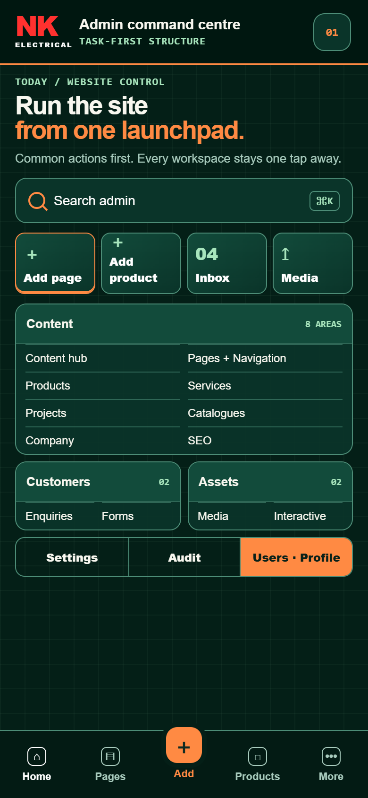
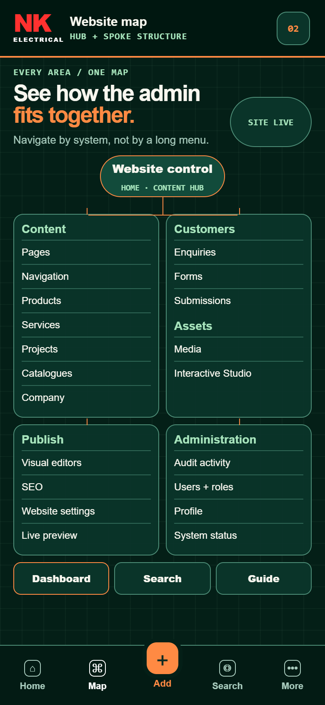
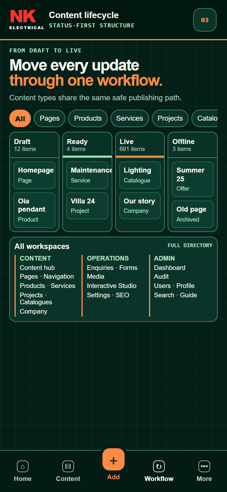
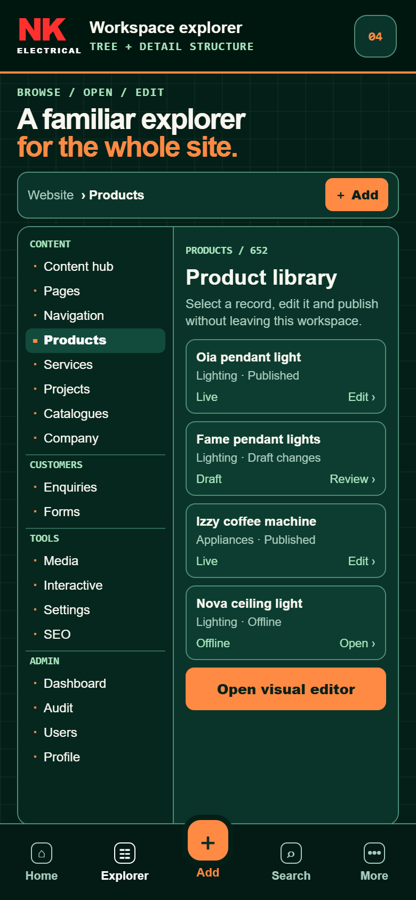
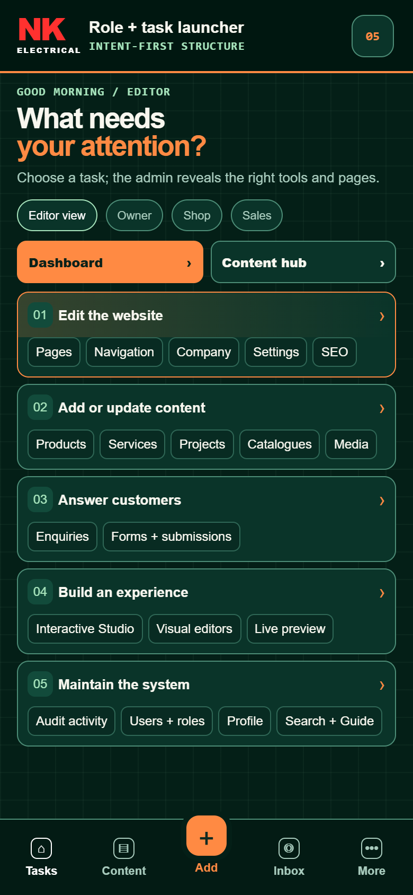

Five ways to structure the admin.
Mobile-first information architecture studies using the current Command Deck theme.
Complete coverage: Dashboard, Content hub, Pages, Navigation, Products, Services, Projects, Catalogues, Company, Enquiries, Forms, Media, Interactive Studio, Settings, SEO, Audit, Users and Profile.

Admin Command Centre
Prioritises quick actions and frequent work, with the complete admin grouped immediately below.

Website Map
Shows how Content, Customers, Publish and Administration connect to the website core.

Content Lifecycle
Organises daily work around Draft, Ready, Live and Offline states across every content type.

Workspace Explorer
Keeps the full admin tree visible while records and editors open in a focused detail pane.

Role + Task Launcher
Adapts the starting structure around what each user needs to accomplish and what their role allows.
Best overall foundation: combine the clarity of Website Map with the fast first screen of Role + Task Launcher. Content Lifecycle is strongest as the advanced Dashboard view.